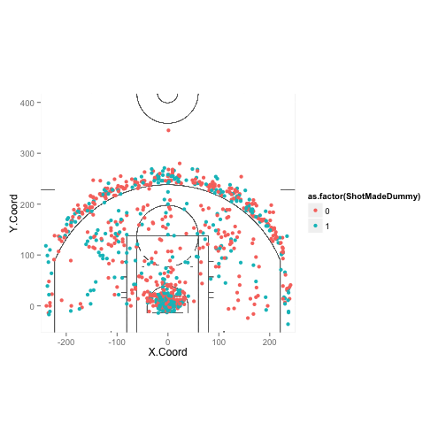

Select a player on the Houston Rockets
Choose a period or multiple periods
red/0 are misses
green/1 are makes
bsneish
Select a player on the Houston Rockets
Choose a period or multiple periods
red/0 are misses
green/1 are makes
Charts generated with ggplot2
library(ggplot2)
library(png)
court <- readPNG('court.png')
hou<-read.csv("shotsHou.csv")
ggplot(hou[hou$PlayerName=="James Harden" & hou$Period %in% c(1,2,3,4,5),], aes(X.Coord,Y.Coord))+ annotation_raster(court, xmin=-Inf, xmax=Inf, ymin=-Inf, ymax=Inf) +geom_point(aes(col=as.factor(ShotMadeDummy)))+ coord_fixed(ratio=1,xlim = c(-250, 250),ylim=c(-52.5,417.5))

Data scraped from nba.com by modifying script by Michael Dickey http://www4.stat.ncsu.edu/~post/sports/